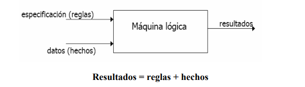

Tarea 10: Gödel
Símbolos
Está basado en módulos (que aceptan polimorfismo) y en tipos de datos (soporta enteros y racionales con una precisión infinita, y número en coma flotante) y tiene una amplia librería de módulos predefinidos. Es un buen lenguaje para tareas de meta-programación, tales como compilación, depuración, análisis, verificación o transformación de programas, ya que es mucho más declarativo que Prolog, por ejemplo.
Sintaxis
Utiliza ciertas palabras reservadas como 'MODULE', 'IMPORT' y 'PREDICATE' en mayúsculas
Esqueleto
Se compone por varios statements entre los cuales se identifican:
- Program
- Module
- Export Part
- Local Part
- Module Name
Aplicación a descargar para editar y ejecutar
Este lenguaje está hecho con propósitos educativos de la Universidad de Briston. Puedes leer más acerca de ello en el siguiente link:
https://web.archive.org/web/20050304094122/http://www.cs.bris.ac.uk/~bowers/goedel.htmlTipo de paradigma
Gödel es un lenguaje de programación declarativo, de propósito general, adherido al paradigma de la programación lógica.
Fibonacci en Godel
MODULE Fibonacci.
IMPORT Integers.
PREDICATE Fib : Integer * Integer.
% Fib(k,n) <-> n is the Fibonacci number F_{k} of rank k.
Fib(0,0).
Fib(1,1).
Fib(k,n) <-
k > 1 &
FibIt(k-2,1,1,n).
PREDICATE FibIt : Integer * Integer * Integer * Integer.
% FibIt(k,f,g,n) <-> n = F_{k} * f + F_{k+1} * g.
FibIt(0,_,g,g).
FibIt(k,f,g,n) <-
k > 0 &
g < n &
FibIt(k-1,g,f+g,n).